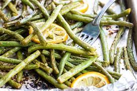

<h1 class="fancy">Green Beans</h1>



<p><b>Description</b></p>

<p>Ipso etc</p>

<p><b>Ingredients</b></p>

<ul>
<li>Green beans</li>
<li>Lemon</li>
<li>Garlic</li>

</ul>

<p><b>Steps</b></p>

<ol>
<li>Mix lemon juice and minced garlic</li>
<li>Stir in beans</li>
<li>Roast for 20 mins </li>
<li>Beans. Done. </li>

</ol>